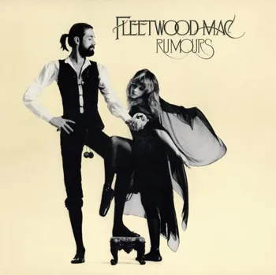
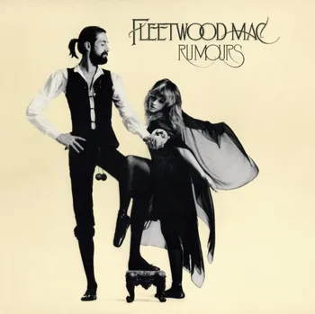

O kapele
Fleetwood Mac je britsko-americká kapela založená v roce 1967. Proslavila se kombinací blues, pop rocku a osobitým vícehlasým zpěvem. Největší úspěch zaznamenala v 70. letech s ikonickým albem Rumours (1977), které obsahuje hity jako Dreams, Go Your Own Way nebo The Chain. Jejich hudba spojuje silné emoce, chytlavé melodie a nadčasový styl, který ovlivnil generace posluchačů.
Poznej členy